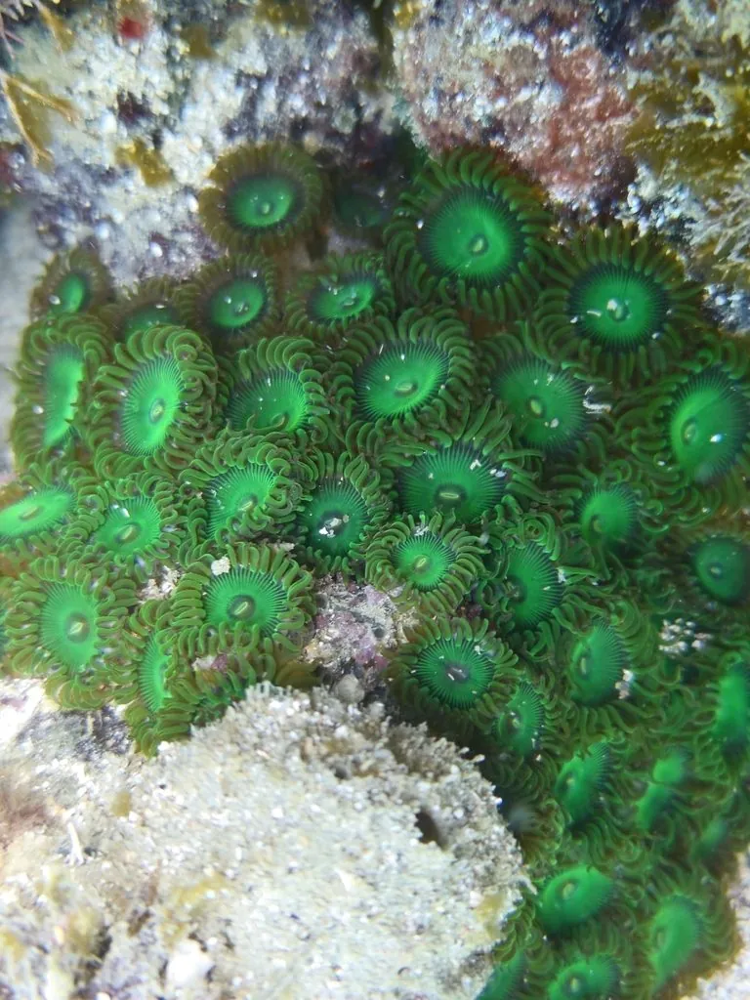

其他无脊椎动物 · 动物界
纽扣珊瑚 Zoanthus sociatus

由许多纽扣大小水螅体连成片的群体海葵，颜色鲜艳，与虫黄藻共生，触手含刺细胞且带毒素，接触需防护。
- 分类
- 门刺胞动物门纲珊瑚虫纲目群体海葵目科群体海葵科属群体海葵属
- 栖息环境
- 热带珊瑚礁潮间带下区至水深十米的礁石、碎石与藻丛，水流平缓处
- 地理分布
- 加勒比海与热带西大西洋的珊瑚礁浅水区
- 保护级别
- 尚无保护级别；观赏水族贸易量大，野外采集普遍
物种志
纽扣珊瑚并不是真正的石珊瑚，而是群体海葵，由许多直径约一厘米的水螅体通过共同的肉层连成一片，每个水螅体有一圈短小的触手，中央是口盘。它的颜色变化极多，有翠绿、橙红、蓝紫、褐黄等，口盘周围常有一圈对比鲜明的色环，看起来像一枚枚彩色纽扣，纽扣珊瑚之名由此而来。体表柔软，受惊时水螅体缩成一团。
它分布于加勒比海和热带西大西洋的珊瑚礁浅水区，栖息在潮间带下区至水深十米左右的礁石、碎石和藻类丛中，喜欢水流平缓、光照充足的位置。它体内共生虫黄藻，靠藻类光合作用供给大部分养分，同时用触手捕食浮游动物。群体靠出芽和横向扩展生长，繁殖期可进行有性生殖。它的触手含有刺细胞，部分近缘类群还含有海葵毒素，徒手触摸或刮除时可能被刺伤，若在封闭空间内加热清洗，毒素可雾化吸入引起发热、呼吸困难，操作时应戴手套和护目镜并保持通风。
形态与习性
- 群体水螅体直径约一厘米，以肉层连成片
- 颜色翠绿、橙红、蓝紫、褐黄等，变异极多
- 共生体内共生虫黄藻，靠光合作用供能
- 栖息水层潮间带下区至水深十米左右的礁区
- 毒素触手含刺细胞，部分类群含海葵毒素
- 防护戴手套护目镜，勿在封闭空间加热清洗
趣味知识
- 它其实是群体海葵，不是石珊瑚，每只小水螅体都像一枚彩色纽扣。
- 它体内养着虫黄藻，晒着太阳就能得到大半口粮。
- 刮除它时若用热水烫洗，毒素可能随蒸汽吸入，必须通风并戴防护。